Chapter 11 — Forty Minutes
August at Glasshouse was the month of the merge queue. Maya noticed it the way you notice a limp — not the injury, but how everyone had rearranged their walk around it. Priya scheduled lunch by the pipeline: push at 11:50, eat, return to a verdict. Newer hires batched unrelated changes into one PR "to save a run," so every red build was a murder mystery with four suspects. CI took forty minutes, and the team had stopped being angry about it, which was worse.
Idris had priced this month back in July — a few hundred new test classes on a CI already creeping past twenty minutes — and nobody had heard him. August was everyone hearing him at once.
Then, one Friday night, the leaderboard froze.
It took until Wednesday for anyone to notice, because the nightly reputation job had no metric, no alert, and the dignity to die quietly. A researcher posted a screenshot — my points haven't moved since Friday — Lena forwarded it with a single eyebrow of a sentence ("the leaderboard is researcher currency; please advise"), and Maya found the stack trace in twenty minutes: Friday afternoon's migration had tightened the leaderboard's unique constraint to (researcher_id, program_id) so researchers could rank per program, and the nightly job's native upsert had failed every run since — correctly, loudly, into a log nobody read.
// LeaderboardRepository — the nightly reputation upsert
@Modifying
@Query(value = """
INSERT INTO researcher_reputation (researcher_id, program_id, points)
VALUES (:researcherId, :programId, :points)
ON CONFLICT (researcher_id) DO UPDATE -- constraint is now (researcher_id, program_id)
SET points = researcher_reputation.points + EXCLUDED.points
""", nativeQuery = true)
void upsertReputation(UUID researcherId, UUID programId, long points);
Postgres, finding no unique constraint matching ON CONFLICT (researcher_id), refused the statement. The fix was one line, the conflict target widened to match the constraint, and it shipped before lunch.
The horror was the test.
@SpringBootTest
class LeaderboardRepositoryTest {
@Autowired LeaderboardRepository repo;
@MockitoBean CortexaClient cortexa; // copied from another test; unused here
@MockitoBean NotificationPublisher notifications;
@Disabled("H2 doesn't support ON CONFLICT — TODO: revisit")
@Test
void upsertReputation_accumulatesPoints() {
// would have gone red the moment the constraint changed
}
}
In the war room, Elias asked for the file on the big screen. He had spent the summer mostly watching Maya run things — he attended standup the way a lighthouse attends shipping — but now he stood, put on his glasses, and read the annotation aloud, slowly.
"H2 doesn't support this. TODO: revisit. Dated June." He looked over his glasses. "Of last year."
Silence.
"Your test suite has been lying to you politely for fourteen months," he said. "It told you what H2 thinks. H2 doesn't take production traffic."
The investigation
The disabled test was one symptom; Maya wanted the cause. She pulled the suite's CI log that afternoon and read it the way Elias had taught her — not for what failed but for what is actually happening. What was actually happening was banners. The Spring Boot ASCII art scrolled past again. And again. And again.
Priya, radicalized by a summer of forty-minute waits, had already gone further. She appeared at Maya's desk with a spreadsheet. "I audited one CI run," she said. "I grepped for context startups. Want to guess?"
"Six?"
"Seventeen. Seventeen separate Spring contexts boot in one run. Each one is eighty to ninety seconds — full component scan, every auto-configuration, a Hikari pool it mostly doesn't use, Flyway migrating an H2 database that isn't our database, and the scheduler, so the digest job actually fires mid-suite, filling CI logs with failed email sends. Twenty-five minutes of our forty is just turning the application on and off."
Boot the whole app and test through it, Maya thought. At Meridian that was a hand-rolled @BeforeAll that started Jetty and prayed — once per test class, because nobody had ever thought to share the fixture. Same tax, fancier collector. "Why seventeen?" she asked. "Spring caches test contexts across the suite. It should boot once and reuse it."
"That's the thing," Priya said. "It would. Almost nothing hits the cache."
⏸ Your call. Two test classes boot the same app with the same profile — and mint two separate contexts. Before the TestContext source opens: what could possibly make Spring treat them as different applications, what does that mean for forty-one classes' creative mock fields, and which -ility is bleeding out at twenty-five minutes a run? Commit.
They took it to the Wall. Maya drew a box and labeled it the context cache key, because she'd spent an evening in the TestContext framework source and the answer was right there. The cache is a map. The key is the merged configuration fingerprint — the configuration classes, the active profiles, the test properties, the context initializers, the web environment, and every bean override. @MockitoBean — the annotation that replaced Boot's old @MockBean when Spring Framework pulled bean overriding into core — doesn't just hand you a Mockito mock. It registers a bean-override definition, and that definition is part of the key. Same key, cached context, free. Different key — any difference — full boot.
Under it she drew what the audit had been measuring — two classes paying nothing, one paying ninety seconds for a clock:

"So every test class that sprinkles its own creative combination of mocks," Maya said, tapping Priya's spreadsheet, "is paying ninety seconds for the privilege of being unique."
The audit had it all: forty-one test classes, every one @SpringBootTest, copy-pasted from whichever class the author had open, each mutating the mock set just enough — this one mocks CortexaClient, that one mocks CortexaClient and the clock, a third adds a @TestPropertySource for one assertion. Seventeen distinct fingerprints. Seventeen boots. And the cache itself is an LRU with a default size of 32 — they weren't even close to evicting; they simply never collided. (If your pause answer was "the bean-override set is part of the key," you had the mechanism; the -ility takes the rest of the chapter to earn its name.)
"And the bugs still get through," Priya said, "because all seventeen of those contexts run on H2."
What the senior sees
Maya wrote the standard that week, and the first page was a drawing of a pyramid. Atrium's suite had the opposite shape: every test in the heaviest, slowest tier — a column. Thanks to H2, the column wasn't even load-bearing.
The senior reading goes like this. @SpringBootTest boots your entire ApplicationContext — every bean, every auto-configuration, security filter chains, schedulers. By default it runs against a mock servlet environment; a real port arrives only if you ask for RANDOM_PORT. That's right for a handful of end-to-end smoke tests, and wrong as the default unit of testing, because you pay whole-application startup to verify one controller's status code. It is the honest nuclear option.
The slices exist to load just enough, and the discipline is knowing what each one deliberately leaves out. @WebMvcTest boots the DispatcherServlet's world — controllers, Jackson converters, validation, @ControllerAdvice, plus Boot's MockMvc security setup. Nothing below it loads: no services, no repositories, no database. Collaborators arrive at the boundary as mocks.
Priya had hit the slice's sharp edge firsthand on Tuesday: her first @WebMvcTest security test sent a researcher token at an admin route and came back 200, where production says 403.
⏸ Your call. The slice booted, MockMvc ran, the route exists — what didn't load, and why is that the slice working exactly as designed? Commit.
A slice tests a layer, not your wiring. @WebMvcTest does not load regular @Configuration classes, so her custom SecurityFilterChain was simply absent, and Boot's slice default — any authenticated request is allowed — let the researcher in. The rules came back the moment she @Imported the config, which is why the standard's example would carry @Import(SecurityConfig.class) like a load-bearing wall.
@DataJpaTest boots the opposite end — repositories, the EntityManager, a DataSource — and wraps each test in a transaction it rolls back at the end, so tests can't pollute each other. The rollback is also the slice's own failure mode. Every assertion runs inside one open persistence context, so lazy loading that would fail in production succeeds quietly in the test. Maya, owner of a 2 a.m. lazy-loading scar, wrote that warning herself. (May's thousand-query dashboard had taught her the mechanism: lazy loads only work while the persistence context is open; the slice's open-to-the-last-assertion transaction is the same amnesty in a test runner.) @JsonTest boots Jackson alone, for the serialization contracts.
The heuristic went in bold: test behavior at the narrowest slice that exercises it — and don't test the framework at all. Half the suite's "coverage" was asserting that Spring Data could parse a method name or that Jackson could serialize a string. Spring's own tests already pass. Delete them; spend the budget on your behavior — like, say, an upsert's conflict target.
Elias read the draft at the Wall that evening, green pen hovering. "Forty minutes, seventeen boots. Which -ility was paying?"
"Speed —" Maya started, and stopped, because that was the developer answer. "Evolvability. The suite is what makes change cheap. Slow, and people batch changes; lying, and people stop believing red. Either way Atrium stops being safely changeable — the only thing tests are for."
"And the part nobody writes down," he said, tapping the pyramid, "is that this drawing is an architecture artifact, not a testing one. Slice boundaries mirror system boundaries — ADR-001's seams, audited for free. Priya tried the payout controller in a web slice on Tuesday; it dragged half the service layer in through a static helper. That's not a test problem. If you cannot slice-test a feature, the feature's seams are lies." He wrote that sentence under the pyramid and initialed it. ADR-001's seams were the ones he meant — package-by-feature, dependencies pointing one direction, the boundary speaking contracts — and a slice has to cut along exactly those lines.
And the H2 problem deserved its own page. H2's Postgres compatibility mode mimics syntax, not semantics: no ON CONFLICT … DO UPDATE, no real JSONB, different locking, different type behavior. A suite that runs on H2 verifies a database you don't ship. Maya had a scar in this exact shape. Meridian did this to itself — HSQLDB standing in for the real database to make the suite fast, green for a year, dead on the first vendor-specific MERGE in production. The instinct that an in-memory database is "close enough" is the trap, and the trap doesn't care whose SQL you hand-wrote.
The fix
The redesign landed in three moves, and Maya ran it as the first engineering-practice change with her name on it instead of Elias's.
Move one: push everything down a layer. Controller tests became @WebMvcTest. That also paid off the per-route security-test mandate from the breach-that-wasn't (a stale matcher had let admin routes fall through to plain authenticated(), so any researcher token walked in; the post-mortem demanded a 401/403 test per route) — because a 403 that costs ninety seconds to verify gets skipped, and a 403 that costs two hundred milliseconds gets written:
@WebMvcTest // all controllers, one shared slice context
@Import({SecurityConfig.class, SharedMocks.class})
class AdminRouteSecurityTest {
@Autowired MockMvc mvc;
@Test
void researcher_cannot_read_payout_settings() throws Exception {
mvc.perform(get("/api/v2/admin/programs/77/payout-settings")
.with(jwt().authorities(new SimpleGrantedAuthority("ROLE_RESEARCHER"))))
.andExpect(status().isForbidden())
// ProblemDetail comes from the AccessDeniedHandler wired in SecurityConfig —
// a 403 thrown in the filter chain never reaches @ControllerAdvice
.andExpect(jsonPath("$.title").value("Forbidden"));
}
@Test
void anonymous_gets_401_not_a_stack_trace() throws Exception {
mvc.perform(get("/api/v2/admin/programs/77/payout-settings"))
.andExpect(status().isUnauthorized());
}
}
MockMvc drives the request through the mock servlet stack — no socket, no Tomcat. That's why it's fast, and enough for almost everything. The dozen true end-to-end smokes that survived as @SpringBootTest(webEnvironment = RANDOM_PORT) used WebTestClient instead, because those should speak real HTTP over a real port.
Move two: one fingerprint to rule them out. The seventeen creative mock combinations collapsed into SharedMocks — a single @TestConfiguration of Mockito @Bean factories that every test in a tier imports identically:
@TestConfiguration(proxyBeanMethods = false)
class SharedMocks {
@Bean TriageWorkflow triageWorkflow() { return Mockito.mock(TriageWorkflow.class); }
@Bean CortexaClient cortexaClient() { return Mockito.mock(CortexaClient.class); }
@Bean Clock clock() {
return Clock.fixed(Instant.parse("2026-08-17T10:00:00Z"), ZoneOffset.UTC);
}
// …and the rest of the canonical set: every collaborator a controller touches, mocked once
}
A web slice doesn't load services at all, so these aren't overrides — they're the missing collaborators, supplied identically. The config class sits in the cache key the same way for every test that imports it. Scattered @MockitoBean fields would each have minted a fresh fingerprint. The oldest rule in testing, Maya thought. Share the expensive thing, or buy it once per class — Meridian's suite had bought Jetty seventeen times a run for years and called it thoroughness. One more deliberate trade-off: the web slice loads all controllers rather than one per test class, because @WebMvcTest(SomeController.class) puts the controller selection in the cache key — twelve scoped slices is twelve boots; one slightly fatter slice is one. A side effect nobody mourned: slices don't boot the scheduler, so the digest job stopped spamming CI with failed emails.
The standard drew the mock line as governance, not taste: doubles for the ports — clocks, vendor clients, workflows, anything Atrium talks to; real for the dialect — the engine Atrium ships on. A mocked-away Postgres is a different production; the leaderboard had spent fourteen months proving it.
Move three: test the database you ship. The data tier moved to real Postgres via Testcontainers, one shared base class, one container for the whole suite:
@DataJpaTest
abstract class PostgresDataTest {
@ServiceConnection // Boot reads host/port/credentials straight off the container
static final PostgreSQLContainer<?> POSTGRES =
new PostgreSQLContainer<>("postgres:17-alpine");
static { POSTGRES.start(); } // started once per JVM, shared by every subclass
}
class LeaderboardRepositoryTest extends PostgresDataTest {
@Autowired LeaderboardRepository repo;
@Test // un-disabled after fourteen months
void upsertReputation_accumulatesPoints_perProgram() {
repo.upsertReputation(RESEARCHER, PROGRAM, 50);
repo.upsertReputation(RESEARCHER, PROGRAM, 25);
assertThat(repo.pointsFor(RESEARCHER, PROGRAM)).isEqualTo(75);
}
}
@ServiceConnection — in Boot since 3.1 — does the wiring that once took a hand-rolled @DynamicPropertySource. The container's coordinates flow into the Environment. As of Boot 4, the slice's embedded-database replacement recognizes a Testcontainers-backed connection and leaves it alone. Flyway runs the real migrations against the real engine. Each test still rolls back, so the container stays clean. One refinement stayed strictly local: .withReuse(true) on the container, paired with testcontainers.reuse.enable=true in ~/.testcontainers.properties, lets the container outlive the JVM itself — the next run finds it instead of starting fresh. Priya flipped it on for her laptop and left it off in CI, where environments are throwaway and a container that survives between runs is just stale state with a name.
The first run pulled the Postgres image — and then Maya allowed herself one piece of theater. The hotfix had shipped weeks ago, but CI deserved its rematch: she checked out the revision that had frozen the leaderboard and ran the resurrected ON CONFLICT test against it. Red — the escaped prod bug, caught by the suite at last. Idris watched the failure scroll by with something close to affection. "First time the suite has disagreed with H2 and been right." On main: green.
That Friday, the team gathered around one laptop while Maya deleted the H2 dependency from the pom.xml. The commit message entered team lore on contact: "Remove H2. It was never Postgres."
The standard needed a number, Elias said, or it would stay an opinion — opinions get re-litigated; binders don't. Maya condensed the week to half a page and dated it:
ADR-011 — Test architecture. Context: Forty-minute CI; every test class
@SpringBootTest; seventeen context fingerprints minted by scattered@MockitoBeanfields; H2 masking Postgres truths — a suite that was slow and untrustworthy. Decision: Test behavior at the narrowest slice that exercises it (@WebMvcTest/@DataJpaTest/@JsonTest); shared test-config classes so context fingerprints converge, under a cache-hit budget tracked in CI; Testcontainers Postgres for anything SQL-shaped; a handful of full@SpringBootTestjourneys; security's 401/403 paths tested at the web slice. Consequences: CI in minutes and failures that mean something; the accepted cost is slice literacy — knowing what each slice loads and pointedly does not — as a team skill.
⚖ Your move, architect
The standard was written; the question was how to land it on a living codebase — forty-one legacy test classes, a roadmap that wasn't pausing, a team mid-limp. Commit before reading on:
- A — The big-bang sprint. Two weeks, zero features: rewrite all forty-one classes in one push; the team relearns testing in one bite.
- B — The ratchet. Every new test follows ADR-011 starting today; the CI dashboard graphs context count and cache hits; old tests migrate opportunistically, as PRs touch them.
- C — Freeze, then contracts first. Moratorium on new
@SpringBootTest, and build a consumer-driven contract-test layer before touching internals.
The trade-offs, since you've committed: A buys a clean break at maximum cost — two weeks of zero features in one lump, every open branch rebasing against a moving test tree, the lesson one indigestible bite. B is what Maya chose, the evolvability play applied to the suite itself: the fitness function makes regression impossible to commit quietly while the debt drains at the rate the code is touched; its tax is a bilingual suite for months and slice literacy taught PR by PR — forty-one small lessons instead of one lecture. (Week one attacked the seventeen fingerprints — mostly deletions of creative mock fields — hence numbers within days.) C spends today protecting a compatibility nobody consumes yet: contracts-first is right when external consumers make the API the asset to protect; Atrium's consumers are mostly its own SPA, so a contract layer is scaffolding for clients that don't exist. The signal that flips the answer: the day Glasshouse ships a partner API with versioned consumers Maya doesn't employ — a day Chapter 14 starts arguing about.
The numbers came in over the next week: four context boots instead of seventeen — one E2E, one web slice, one data slice, one @JsonTest — and CI at nine minutes. Priya built a CI-duration panel and announced she'd be treating it like an SLO; any PR that added a fifth fingerprint would hear from her — not through vigilance, through two artifacts she wired in that same afternoon. The first made the cache testify:
# src/test/resources/application-test.properties — make the cache testify
logging.level.org.springframework.test.context.cache=DEBUG
# every run now logs: "...DefaultContextCache... size = 4, hitCount = 312, missCount = 4"
The second made ADR-011's budget executable — three lines of CI standing where a code-review opinion used to:
# CI step — the context budget with teeth (ADR-011: target 4)
BOOTS=$(grep -c ":: Spring Boot ::" build/test.log) # one banner per boot — Priya's audit grep, promoted to a gate
[ "$BOOTS" -le 4 ] || { echo "context budget blown: $BOOTS boots"; exit 1; }
The @Disabled-with-TODO pattern was replaced in the standard by one sentence Elias approved without a single green mark: if you can't test it, you can't ship it.
A fitness function asserts a property of the architecture, not a behavior of the code — ADR-002's whole move — and a slow suite is a signal that the boundaries leak. Beside the panel went the cache-hit budget, contexts-per-run, target four: CI minutes are a cost line, capacity planning for the dev loop. The panel was January's red build naming its own law, pointed at a clock. Lena did the only arithmetic she ever needed: "Thirty-one minutes a run, forty runs a day. You found us a hire."
"Nine minutes," Idris said at the brick handover, in the tone he reserved for compliments he intended to weaponize. "So now the tests can see Postgres. Shame nobody can see prod. That metrics ticket from the spring turns five months old soon — I'd bake it a cake, but we have no dashboard to put the candles on. And I'm still waiting on my lock-wait graphs from May." Maya laughed, and wrote both down, and did not yet know she would remember the sentence at 3:04 one September morning, at her kitchen table, in the dark.
The debrief — Ch.11, Forty Minutes
@WebMvcTestvs@SpringBootTest— what loads, what doesn't, and why does context caching matter at scale? Claim: Prefer the narrowest slice; reserve@SpringBootTestfor a handful of end-to-end smokes. Mechanism:@SpringBootTestboots the entireApplicationContext— full component scan, all auto-configuration, security, schedulers — while@WebMvcTestboots only the MVC layer (controllers, converters, validation, advice, MockMvc security) with collaborators mocked, and@DataJpaTestboots only repositories plus a rollback-per-test transaction. The TestContext framework caches contexts across the suite, keyed on the merged configuration fingerprint: config classes, profiles, properties, initializers, web environment, and the full set of bean overrides (@MockitoBean). Trade-off: Slices are fast and isolated but can't catch cross-layer wiring bugs — you keep a few full-boot tests precisely for those. Failure mode: A 2,000-test suite where every class is@SpringBootTestwith its own creative mock combination produces dozens of unique fingerprints; almost nothing hits the cache, and CI spends most of its runtime booting and shutting down the same application — forty minutes of pipeline for nine minutes of tests.
THE ARCHITECT'S LENS
- -ilities at stake: Evolvability, via its enabler — the suite is the system's second architecture, the one that makes changing the first cheap: slow, it taxes every change (people batch); lying, it taxes every belief (people ship on H2's word). And cost, named out loud: CI minutes are money and attention; the cache-hit budget is the dev loop's capacity plan.
- The ADR: ADR-011 — test architecture: the narrowest slice that exercises the behavior; shared test-config so fingerprints converge under a CI-tracked cache-hit budget; Testcontainers Postgres for anything SQL-shaped; a few full
@SpringBootTestjourneys; 401/403 at the slice. - Rejected alternatives: H2 in Postgres compatibility mode (syntax, not semantics — it verifies a database you don't ship); bigger CI runners (pays for seventeen boots instead of deleting thirteen); mocking repositories in data tests (the dialect is the one thing that must stay real — the doubles policy is governance, not taste); the big-bang rewrite sprint (two weeks of zero features, one indigestible lesson).
- Fight or lean: Lean on the TestContext cache, the slices, and
@ServiceConnection— Boot's test machinery is built to be cheap if you stop being creative; uniform configuration is the cache's asking price. Fight the comfortable lies: H2-as-Postgres,@Disabled-with-TODO, copy-pasted mock sets — each a convenience spending an -ility nobody approved.
Story anchors
- The fourteen-month-old TODO read aloud → a
@Disabledtest isn't a deferral, it's a standing decision not to know; H2-vs-Postgres divergence is exactly what it chose not to know. - Priya's spreadsheet of seventeen boots → the context cache key: config classes + properties + profiles + every bean override; one shared mock config is the speed lever.
- "Remove H2. It was never Postgres." → Testcontainers +
@ServiceConnection: test against the engine that takes production traffic, and the resurrected test catches the escaped bug. - Priya's payout controller that wouldn't fit a web slice → slice boundaries mirror system boundaries; a feature you can't slice-test has lying seams — the suite audits ADR-001 for free.
Interview ammo
- Kill-shot #8:
@WebMvcTestvs@SpringBootTest— what loads, what doesn't, and why does context caching matter for a 2,000-test suite? — Slice loads only MVC infrastructure with mocked collaborators; full boot loads everything; the cache keys on the configuration fingerprint including the mock set, so uniform test configuration is the difference between four boots and seventeen. - Follow-up: what exactly makes the test-context cache miss or evict? — Any change to the merged configuration — classes, active profiles, test properties, initializers, web environment, or the bean-override set — is a new key and a fresh boot;
@DirtiesContextevicts outright, and the cache is LRU with a default size of 32. - Follow-up: why not just run H2 in Postgres compatibility mode? — Compatibility mode mimics syntax, not semantics —
ON CONFLICT … DO UPDATE,JSONB, locking, and type behavior all diverge — so green on H2 verifies a database you don't ship; a Testcontainers Postgres shared across the suite costs seconds after the first image pull. - Architect follow-up — CI takes forty minutes and the org offers to buy faster runners; what's the architecture answer? — Hardware pays for the boots, design deletes them: converge fingerprints, test at the narrowest slice, track cache hits as a budgeted fitness function, and only then spend money — CI minutes are a cost -ility; don't buy hardware to subsidize a leaking architecture.
Pointers → Playbook Ch.11 · examples/ch11_testing/